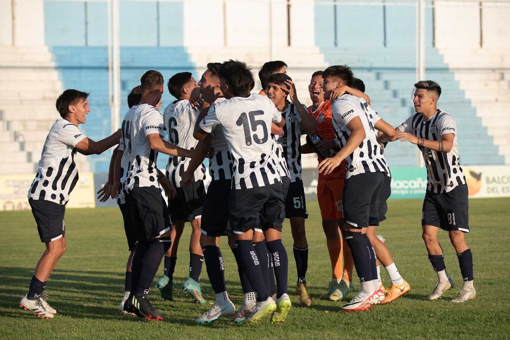
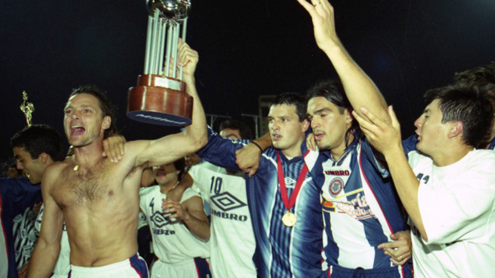
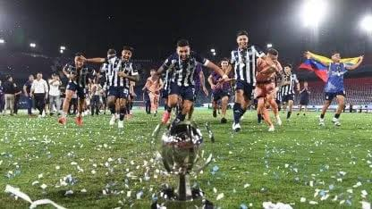

Titulos y logros del club
A lo largo de su historia, Talleres ha puesto a Cordoba en lo mas alto del pais, conquistando titulos y clasificando a copas internacionales.
Titulos de liga cordobesa

Previo a unirse de forma oficial a la AFA en 1967, Talleres conquisto una gran cantidad de titulos en su etapa en la liga cordobesa. "El Matador" campeono un total de 63 veces, de los cuales 27 fueron campeonatos anuales.
Copa Conmebol 1999

El 8 de diciembre de 1999, Talleres ganó la Copa Conmebol —único título internacional de Córdoba— tras golear 3-0 a Sportivo Alagoano con un agónico gol de Julián Maidana al minuto 90, revirtiendo el 4-2 de la ida para consagrar al equipo de Ricardo Gareca.
Supercopa Internacional 2024

El 5 de marzo de 2025, Talleres se consagró campeón de la Supercopa Internacional al vencer a River Plate por 3-2 en los penales (tras empatar 0-0), logrando bajo la dirección de Alexander Medina el primer título nacional de máxima categoría (AFA) en su historia y cortando una sequía de 26 años.